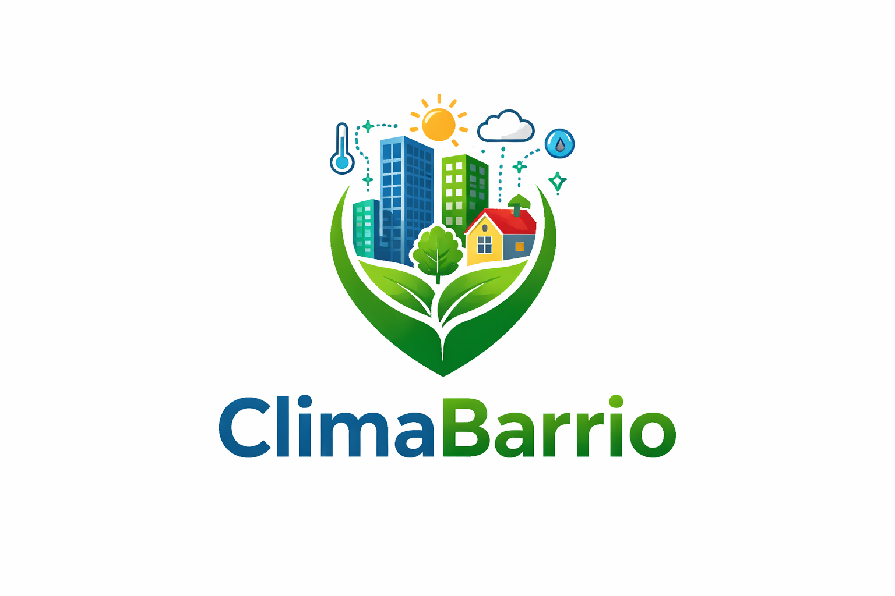

¿De qué trata ClimaBarrio?

ClimaBarrio es un nuevo servicio que recaba información del medio ambiente, dando con exactitud datos sobre temperatura, humedad, ruido, calidad del aire y radiación solar. Son similares a las estaciones meteorológicas pero a escala hiperlocal, es decir, escala barrio(por eso el nombre).
Nuestro producto
Nuestro producto trata de unos microsensores que se instalan en farolas, balcones, tiendas.. Y recaban información del ambiente que los rodea.
En este enlace le dejamos toda la información sobre nuestro producto
El ciclo de vida de nuestro producto
Nuestro microsensores cuentan con materiales recicables y facilmente desmontables, ayudando a aumentar su vida útil.
Descubra más sobre el ciclo de vida de nuestro producto en este enlace
¿En que se relaciona con la sostenibilidad?
Nuestro producto es sostenible por los materiales usados en su fabricación junto con su fácil reparación.
Averiguelo clicando en el siguiente enlace
¿Porqué nuestro producto resulta más amigable con el medio ambiente?
Mientras que todas las demás empresas usan el modelo actual de producción y consumo, nosotros volvemos al tradicional para asegurarnos de reducir nuestra huella de carbono lo máximo posible.
Para saber más pinche el siguiente enlace
¡La app de ClimaBarrio!
Puede ver un ejemplo de como funcionaría nuestra app en el siguiente enlace
Contáctanos
Pregunta lo que desee o contrátenos para hacer su ciudad mejor
Síganos en:
- Instagram: @climabarrio.oficial
- TikTok: @climabarrio
- Facebook: ClimaBarrio – Información y Alertas Locales
- Youtube: ClimaBarrio Alertas y Consejos